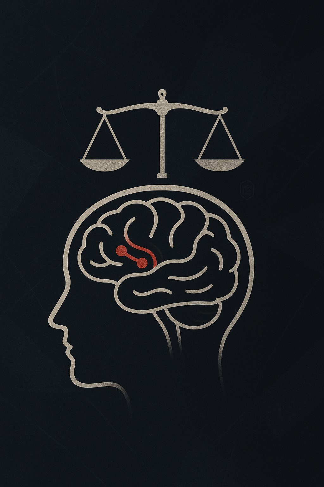

記録6：裁きの心理学
なぜ私たちは「裁きたがる」のだろうか？
日常の中で、他者の失敗や不正を見つけると、心の奥底から湧き上がる衝動──「正すべきだ」「罰するべきだ」というあの感情。ニュース、SNS、職場、友人関係…あらゆる場面で、私たちは“悪”を糾弾することに熱中している。

心理学者S. Ortega（2012）はこれを「裁きの衝動」と名付け、次のように指摘している※1：
裁きの衝動は、集団維持のために人類が進化の過程で獲得した本能である。正義は道徳的な理想ではなく、生存戦略のひとつだ。
さらに、脳科学の分野でもその“本能”は裏付けられている。D. Lee & M. Yamashita（2015）の実験※2では、人が他者のルール違反を目撃した際、脳内の報酬系（特に腹側被蓋野）が活性化することが確認されている。つまり──
「我々は、裁くこと自体に快感を覚える」という驚くべき事実が示されたのだ。
近年読んだ論文の中で、特に印象に残っているものがある。
怒りは抑え込むものではない。それは理性という鞘に収められた剣であり、しかるべきときに振るわれるべきものだ。
— Bessho, Y. (2021). The Intrinsic Pleasure of Justice and Behavioral Guidance
この一節を目にしたとき、私の中の何かが確かに“応えた”感覚があった。
思い返せば──私の身近にも、そうした対象は確かに存在していた。些細な一言、曖昧な態度、見え隠れする冷たい優越感。それが“単なる誤解”である可能性を考えることもあったが、深層心理はずっと訴え続けていたのだ。「これは許してはならないものだ」と。
そうした認識の先に、私はひとつの扉を見た気がする。
自らを正義と信じる者だけが、踏み越えることを許される領域。
正義の名のもとに行動すること。 それは時に、「自分の存在を賭けた覚悟」を問うものだ。
だが、私はもう迷わない。
裁きは、私の義務だ。
※1: Ortega, S. (2012). The Impulse of Justice: Evolutionary Roots of Punishment, Social Mind Review, 8(1), 45-59.
※2: Lee, D., & Yamashita, M. (2015). Neural Correlates of Moral Judgment, Neuropsychology Journal, 22(4), 203-218.
※3: Bessho, Y. (2021). The Intrinsic Pleasure of Justice and Behavioral Guidance, Cognitive Behavioral Science Review, 15(2), 99-118.
※4: 図「裁きの心理的構造」Takashi.K